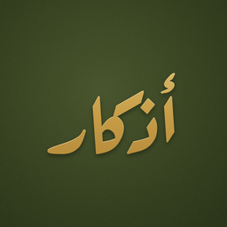

أذكار
أذكار الصباح والمساء
أذكار الصباح والمساء بتصميم هادئ: اضغط في أي مكان للعدّ، وتذكير بعد الفجر والعصر حسب مدينتك. بلا إعلانات، بلا حساب، ويعمل بدون إنترنت.
Morning & evening adhkar with a calm design: tap anywhere to count, reminders after Fajr and Asr for your city. No ads, no account, works offline.
© 2026 Maxsystems